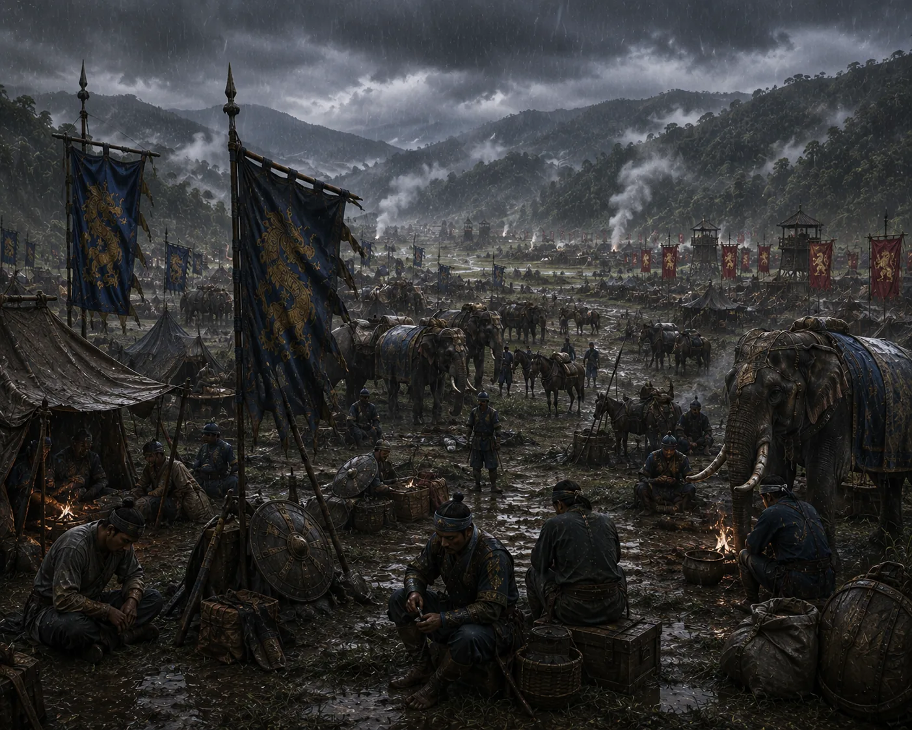

Military Stalemate in the Kamata Campaign
c. 1306–1307 · The coming of Sukaphaa

After prolonged fighting and sieges without either side securing a decisive victory, both monarchs recognize mutual exhaustion.
Sources have not yet been catalogued for this record.
People: Durlabhnarayan (Kamata), Sukhaangphaa
Open this scene in the interactive archive · Follow this event on MAP